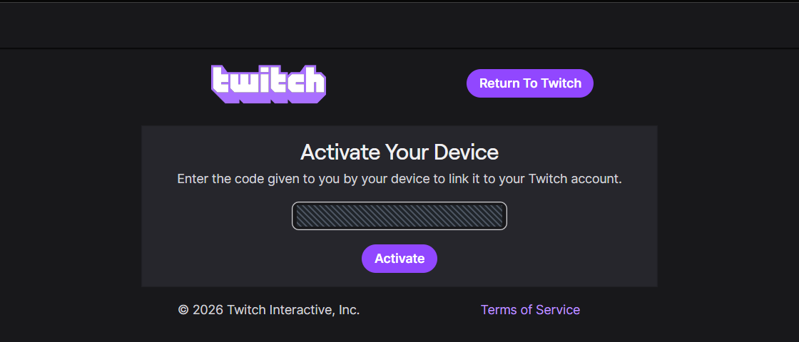
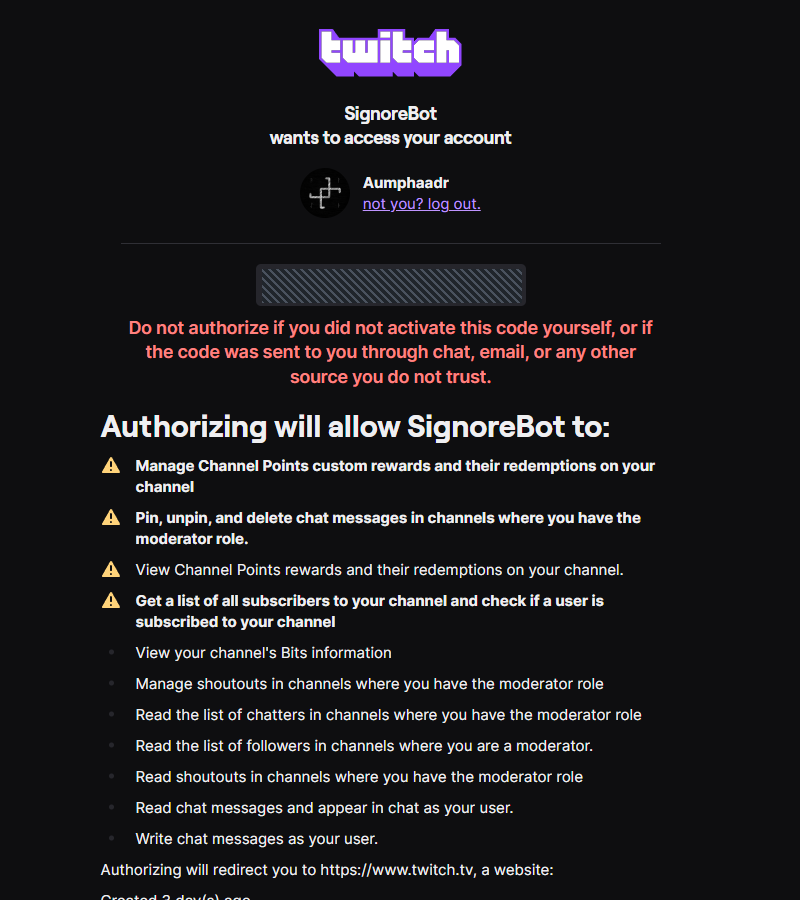

Урок 2 из 9
Авторизация: канал и отправитель
Подключите канал Twitch и выберите, от чьего имени бот отвечает в чате. Вход проходит на сайте Twitch: пароль в SignoreBot вводить не нужно.
От чьего имени бот должен писать в чат?
В начале вкладки Авторизация две карточки выбора. От имени стримера — один вход в аккаунт стримера: бот слушает события канала и отвечает от вашего ника. Этот режим выбран на новой установке. От отдельного имени — сначала подключается канал, затем другой Twitch-аккаунт, от имени которого приходят ответы. Сохранённый режим уже настроенного приложения не меняется.
Сначала подключите канал
Нажмите «Открыть в браузере» у стримера
Откроется Twitch в системном браузере. Код виден и в панели. Если аккаунт канала выбран в другом браузере или профиле, нажмите рядом Скопировать ссылку и откройте её в нужном браузере.
Проверьте ник и подтвердите права
Убедитесь, что на Twitch выбран аккаунт вашего канала. Введите показанный код, нажмите Activate, затем подтвердите разрешения кнопкой Authorize.
Дождитесь подтверждения в панели
После проверки Twitch появятся ник и статус Подключён. При выборе «От имени стримера» настройка закончена: строка Бот пишет как @… показывает отправителя.


Отдельный аккаунт бота
Выберите От отдельного имени. После подключения канала нажмите Скопировать ссылку в карточке бота. Вставьте её в браузер или профиль, где выбран бот, и подтвердите код и права.
«Ссылка скопирована. Вход ещё не завершён» означает ожидание. Копирование само по себе не подключает аккаунт. На странице Twitch проверьте ник: нужен другой аккаунт, а не стример.
У бота нет кнопки открытия браузера: скопированную ссылку нужно вставить вручную. Отдельному боту нужно выдать модератора канала, чтобы он мог удалять сообщения.
Если Twitch вернул тот же аккаунт
Панель сообщит, что аккаунт уже подключён во второй роли. Неудачная попытка не заменит прежнюю авторизацию. Нажмите Повторить вход для бота и используйте другой браузер или профиль. Если хотите отвечать от своего имени, нажмите Писать от имени @…: это явно включает общий аккаунт.
Такая же проверка действует при замене стримера: аккаунт отдельного бота нельзя одновременно подключить как канал. Старые настройки с двумя одинаковыми Twitch ID требуют выбрать общий режим или подключить другого бота.
Готово и смена режима
Бот запускается автоматически, когда выбранные роли проверены. Под карточками всегда виден итог: Бот пишет как @…. Если вы меняете рабочий общий аккаунт на отдельного бота, прежний отправитель продолжает работать до завершения нового входа. Панель показывает это явно. Незавершённый выбор режима действует до закрытия приложения; после перезапуска восстановится сохранённый рабочий режим.
Чтобы сменить аккаунт, нажмите Выйти, затем авторизуйтесь другим аккаунтом. Выход стримера доступен и во время ожидания входа бота; он отменяет эту попытку. При отмене или смене режима старый код больше не принимается приложением.
Токены хранятся в системном хранилище либо в локальном файле secrets.json и обновляются автоматически. У авторизованного аккаунта видны кнопки Обновить токен и Выйти. Twitch ID и права показываются при наведении на знак вопроса рядом с ником.